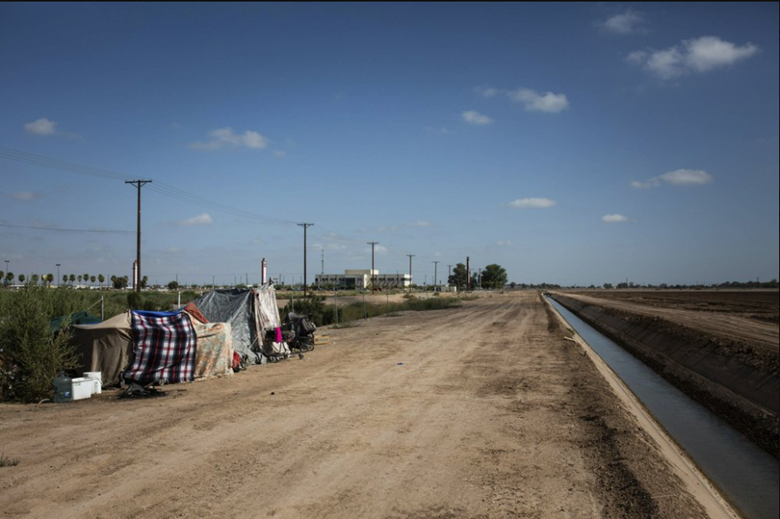

COVID-19 is ‘a crisis within a crisis’ for homeless people
BY MOLLY BOHANNON, KATIE SURMA, AUSTIN FAST, NINO ABDALADZE, MEGAN LUPO, JAMIE FIELDS and SANJANA GARG August 24, 2020Nearly 200 tents stand inches apart on the scorching gravel lots, many covered in blankets for an extra layer of relief from the desert sun. Outside, their occupants sit on hot ground or in folding chairs, nearby palm trees providing no shade. Despite 12-foot-square sections painted in the gravel, there is little social distancing for Phoenix’s homeless population.
Created by local officials in late April as a temporary solution for some of the estimated 3,700 unsheltered homeless, the fenced-in lots on the edge of downtown promised round-the-clock security, social distancing and access to water and toilets. But residents complain that hygiene supplies have become scarce, and measures meant to contain the spread of COVID-19 are not enforced.
“We have been, like, ignored,” said 61-year-old Elisheyah. “There’s no safety, nothing to guarantee you can be safe out here.”
Homeless people are one of the most vulnerable populations in the COVID-19 pandemic, yet they’re largely invisible victims of the crisis. Very little is known about how they are faring in part because the U.S. Department of Housing and Urban Development -- the main federal agency overseeing homeless programs -- has not required its national network of providers to gather information on infections or deaths. That’s despite the fact that unlike other high-risk, congregate-living groups, such as nursing home residents or prisoners, homeless people interact more with the public.
At the start of the pandemic, researchers warned that at least 1,700 of the country’s estimated 568,000 homeless people could eventually die of COVID-19. The administration’s homelessness czar told Congress in July there had been just 130 homeless deaths, noting that was “significantly lower than had been originally projected.”
However, the Howard Center for Investigative Journalism tracked at least 153 homeless deaths in the same time period in just six areas with large homeless populations -- San Francisco, Los Angeles, New York City, Washington, D.C., Seattle and Phoenix -- and found at least 206 deaths nationwide by early August.
“This country for a long time has written off the lives of people experiencing homelessness,” said Dr. Margot Kushel, a nationally recognized homelessness expert and medical professor at the University of California, San Francisco. “And now it is literally the thing that is really going to make it very difficult to control this pandemic.” Kushel called the pandemic “a crisis within a crisis,” noting that most homeless people are usually in poorer health and, with widespread closures, had lost access to services providing food, water and shelter.
The Howard Center spent three months investigating COVID-19’s impact on homeless people, analyzing data to predict which homeless populations around the country would be most vulnerable. It identified 43 counties that would likely struggle in the pandemic, several of which, such as Imperial in California and Maricopa in Arizona, went on to develop some of the highest infection rates in the country. Reporters also interviewed more than 80 professionals working in homelessness, epidemiology and public health, as well as homeless people in hot-spot areas, who described their daily struggles. And because homelessness is typically a problem left to local communities to address, reporters filed 140 public records requests to the vulnerable counties and their major cities to learn more about their responses to the crisis.
Congress allocated more than $4 billion for homeless-specific programs as part of the Coronavirus Aid, Relief, and Economic Security Act and made billions more available at the discretion of federal and state officials.
But more than four months after passage of the CARES Act, the Howard Center found HUD had given communities access to less than one-third of the money allocated, and even those with access to funds were still waiting on federal guidelines on how to spend the money. Cities and counties can access the funds directly or seek reimbursement for approved expenditures after signing grant agreements with HUD.
When the money does arrive, not all of it may be used to help homeless people. Some homelessness professionals fear local governments will direct the majority of the money to homeless prevention, helping people stay in their homes.
Ann Oliva, HUD’s former deputy assistant secretary for special needs, said it was “politically and operationally easier to focus on eviction prevention for people who are in housing, and who are, unfairly, often seen as more worthy of assistance than people who are experiencing homelessness.” But, she added, “We have to do both.”
HUD did not respond to Howard Center questions about the delays, including on spending guidelines.

Many have criticized the federal government for not providing a coordinated response to the pandemic’s impact on homeless people, as well as more resources for testing and tracing. Some have also advocated for racially equitable COVID-19 responses. By early August, people of color, who represent about 24% of the general population, comprised about 61% of all COVID-19 infections and 50% of all deaths, according to the U.S. Centers for Disease Control and Prevention.
“We have been left county by county, city by city, to cobble together a public health response to something that is on par with the Spanish flu in terms of its infectiousness and potential lethality,” said Marc Dones, executive director of the National Innovation Service, a public policy organization focused on racial equity. “To simply step out of the role, to step out of the responsibility in this moment feels like a fundamental abdication of the purpose of government.”
At the start of the pandemic, the Howard Center found, some communities quickly responded, forming working groups to address both the housing and health needs of their homeless populations, and securing emergency housing, such as hotels, trailers and even convention centers, to prevent communal spread.
In early March, for example, the homelessness prevention and response coordinator in Colorado Springs, Colorado, arranged cross-departmental meetings with public health and nonprofits and, in just three weeks, an emergency isolation shelter with 100 beds was constructed.
San Diego opened its convention center as an emergency shelter, testing site and meal distribution hub on April 1 and, by early August, had sheltered 2,780 homeless people. Internal records show the city spent approximately $2.8 million a month on the makeshift shelter, and expects to spend $3 million a month through the end of the year.
Others were slow or failed to respond.
The city manager in Sanger, California, opposed housing homeless people possibly infected with COVID-19 in emergency trailers in his town before he was ordered to take them by the county public health department, records show. Before the trailers arrived, city manager Tim Chapa appealed to the City Council. He said the city’s shelter “may not have the capacity to provide adequate medical support service to identified COVID + homeless,” he recounted in an April 17 email to a county official. Chapa said the trailers would be better in Fresno, where they ended up later that day.
In Daytona Beach, Florida, efforts to convert an old building into permanent housing for homeless residents failed, despite the project having funding and county support. Jeff White, executive director of Volusia/Flagler County Coalition for the Homeless, Inc., and another nonprofit leader argued that using COVID-19 funds to develop “permanent supportive housing” was better than paying for hotel rooms, which would be “basically burning money.” White told the Howard Center he moved on to another plan after city officials gave him “kind of a non-response” that didn’t show support for the project.
Leaders in El Centro, the main city in California’s Imperial County, repeatedly but unsuccessfully sought the county’s help with a testing program. “As to the homeless population, they are not going to enact anything unless there are any positive results within the population. They are not doing any pre-emptive activities,” Adriana Nava, El Centro’s community services director, wrote to her colleagues on March 19.
Overall, records showed, localities faced two major problems in addressing the pandemic’s impact on their homeless populations: a lack of readiness to work across departments dealing with both housing and health and insufficient data and testing to know who was getting sick and where.
“All states have been at a disadvantage in their response to C-19 because the federal government has failed to adopt a unified, nationwide strategy. In fact, the national strategy seems to be ‘let states handle it,’” Barbara DiPietro, senior policy director for the National Health Care for the Homeless Council, said in an email. “This is the least efficient, most wasteful way to approach a crisis.”